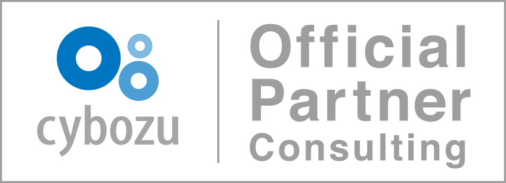
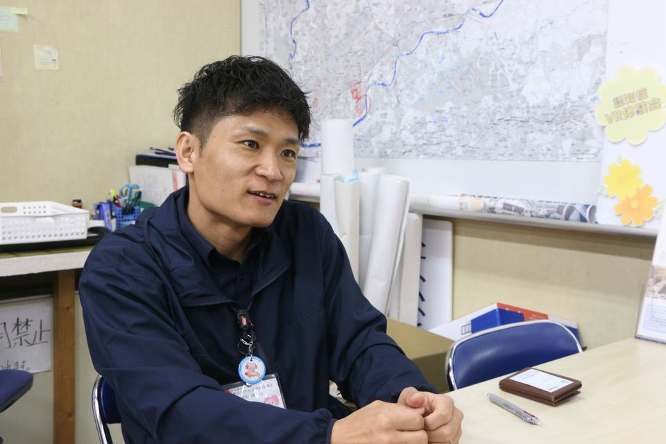

人手不足・生産性の低下
いま紙の申請やExcelへの転記・集計に追われ、本来注力すべき業務に手が回らない。
導入後申請・承認・集計などの定型業務が効率化し、限られた人員でも業務が回る。
建設・不動産・製造業などの中小企業から、自治体まで
業務改善から内製化まで。
現場理解を強みに、導入・定着を支援します。
※ 画面はイメージです（サンプルデータ）

有資格者の在籍や実績などの条件を満たした企業のみが認定されるパートナーです。
1959年創業
建設コンサルタントとして、国・県・市町村の公共事業に携わってきました。
作って終わりにせず、運用定着・内製化まで継続して支援します。
いま紙の申請やExcelへの転記・集計に追われ、本来注力すべき業務に手が回らない。
導入後申請・承認・集計などの定型業務が効率化し、限られた人員でも業務が回る。
いま仕事の進め方や対応履歴が担当者ごとに異なり、休みや異動のたびに業務が滞る。
導入後業務の手順と対応履歴を共通の仕組みで管理し、担当者が変わっても業務が続く。
いま案件や進捗の情報がExcel・紙・メールに散らばり、組織全体の状況がつかめない。
導入後情報を一か所に集めて見える化し、進捗や課題を組織全体で把握・判断できる。
いま専門の担当者やノウハウがなく、何から改善すべきか分からないまま進まない。
導入後業務整理から導入・定着まで当社が伴走し、社内で改善を続けられる体制ができる。
「まずは小さく始めたい」「特定の業務だけ見直したい」というご相談も歓迎です。
Services
業種・組織の特性に合わせて、支援内容をご用意しています。
建設・不動産・製造業などの中小企業さまへ。Excelと紙でバラバラな業務を、kintoneでひとつにまとめます。
自治体・公共団体さまへ。紙中心の業務を減らし、住民のための仕事に時間を使える環境をつくります。
Our Strengths
1959年創業の建設コンサルタントとして、測量・補償・建設コンサルタント業で国・県・市町村の公共事業に携わってきました。行政や現場の業務理解と、オフィシャルパートナーとしてのkintone専門性を併せ持ちます。
机上の理論ではなく、現場訪問によるヒアリングで実態を把握。本当に必要な機能を見極め、実際に運用できる仕組みを設計します。
運用定着まで継続的に支援し、改善要望や追加開発にも柔軟に対応。月額プランやスポット支援など、状況に応じた体制をご用意しています。
Case Studies

社会福祉法人 春日井市社会福祉協議会
社会福祉法人 犬山市社会福祉協議会
Process
いまの業務の流れや帳票、Excelを拝見し、課題と改善の優先順位を整理します。
優先度の高い業務からアプリを設計・構築。小さく始めて、段階的に広げていきます。
運用しながらの改善や追加開発を伴走し、「自分たちで回せる」状態を一緒に目指します。
Support Area
東海圏は“直接訪問”、遠方は“全国オンライン”。実際の帳票や業務の流れ、現場の空気は画面越しだけでは見えないため、東海圏のお客様にはできる限り現場へ伺います。
帳票や作業の流れを実際に拝見し、対面で“現場で使える”kintoneに落とし込みます。
Web会議と画面共有で、東海圏と変わらない品質の導入・活用支援を提供します。
内製化・定着まで長く並走し、「自分たちで回せる」状態を一緒に目指します。
Contact
サービス内容・料金プラン・導入の流れをまとめた資料を、無料でダウンロードいただけます。
業務課題のヒアリングから最適なプランのご提案まで、無料でご相談を承ります。まずは「話を聞くだけ」でもOK。愛知（名古屋）・岐阜エリアなら、直接お伺いします。
お問い合わせ・ご相談PDF形式｜必須項目は3つ。送信後すぐにダウンロードできます